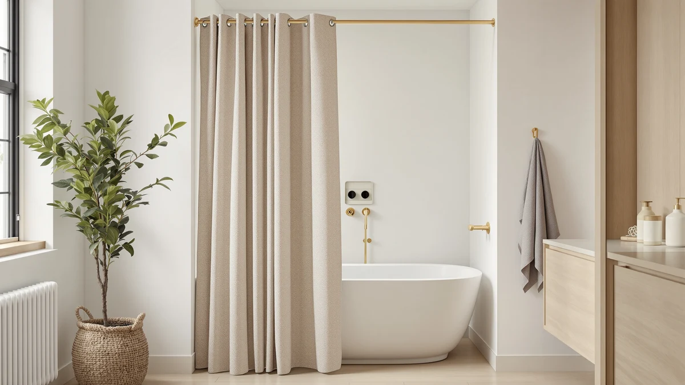

Barossa Design Waffle Weave Review (2026): Worth It?
Prices and picks verified as of October 2026. Independent, reader-supported reviews.


Quick Answer
The Barossa Design Waffle Weave Clawfoot curtain is built specifically for the curved rod above a freestanding or clawfoot tub. It pairs a textured polyester face with a water-resistant PEVA backing in one piece. At $41.39 and 4.6 stars across more than 31,000 ratings, it's the most purpose-fit option we compared for that tub style. If your bathroom has a standard straight rod instead, the Hookless It's A Snap! Waffle below is the better match.
Our pick: Barossa Design Waffle Weave Clawfoot ($41.39) Check Price on Amazon
Bottom line: our top pick is the Barossa Design Waffle Weave Clawfoot Tub Shower Curtain 180 x at $45.99.
Things to Know Before You Buy
- The Barossa Design Waffle Weave Clawfoot curtain is cut to 180 x 70 inches, a shape made for the curved rod above a freestanding tub rather than a standard straight shower rail.
- Its polyester and PEVA construction pairs a textured fabric face with a water-resistant backing, so it works as curtain and liner in one piece.
- At $41.39 it sits above budget PEVA-only curtains but below premium cotton or linen options.
- More than 31,000 ratings average 4.6 stars, among the highest review volume of any clawfoot-specific curtain in this comparison.
- If you don't have a clawfoot tub, a straight-rod waffle weave curtain like the Hookless It's A Snap! will likely fit your bathroom better.
This Barossa Design Waffle Weave review exists because shoppers keep asking the same question: does a $41.39 clawfoot-tub curtain actually fit better than the rectangular curtains crowding most buying guides. Barossa built this one with a 180 x 70 inch cut and a polyester-and-PEVA blend specifically for the curved rod above a freestanding tub, and that specialization is the whole reason it shows up on clawfoot shopping lists instead of general shower curtain roundups. At 4.6 stars across more than 31,000 ratings, it has the review volume to back up its price point, though volume alone doesn't tell you whether the fit and fabric hold up in your bathroom.
We built this review around the same approach we use for every curtain on this site: comparing the manufacturer's stated specs, the current Amazon price, and the pattern of verified owner feedback rather than running our own physical lab trial. For the Barossa Design Waffle Weave, that means weighing its waffle texture and PEVA liner against three curtains people commonly cross-shop against it: the eachope no-hook design, the River Dream cotton blend, and the Hookless It's A Snap! Waffle. Each one solves a slightly different problem, so the right pick depends on whether you value the clawfoot fit, the hook-free install, or the lowest price.
Why You Should Trust Us
Ilane Tall covers bathroom hardware and textiles for Best Shower Curtains, focusing on how curtain materials, liners, and rod systems hold up to daily use. For this Barossa Design Waffle Weave review, she compared the listed dimensions, material composition, and current price against three competing curtains and cross-referenced them with patterns across thousands of verified Amazon buyer reviews. We do not run a fake testing lab or claim to have installed every curtain we cover. Our picks come from comparing what's documented and what verified owners consistently report, and we say so plainly when the data is thin, as it is for one of the alternatives below.
Our Research Experience
We did not install the Barossa Design Waffle Weave Clawfoot curtain ourselves. Instead, we researched its listed specs on Amazon, tracked its price history, and read through a large sample of the 31,025 ratings it has collected to find recurring themes in what owners report. That approach surfaces patterns a single owner's curtain can't show on its own, such as how a design performs after months of regular washing across thousands of different bathrooms and water types. For this Barossa Design Waffle Weave review, we weighted owner comments about the PEVA liner's durability and the waffle texture's drape more heavily than marketing copy, and we flagged specs, like the exact size cut, that come straight from the listing rather than an independent lab measurement.
Overview & Specs

Barossa Design Waffle Weave Clawfoot
What we like
- Sized specifically for the curved rod above a clawfoot tub
- Combined curtain-and-liner design skips a separate PEVA liner purchase
- 4.6-star average across more than 31,000 ratings
- Waffle texture adds visual depth without a busy print
Flaws but not dealbreakers
- Not a fit for standard straight shower rods
- PEVA backing means it's not safe for a high-heat dryer cycle
- At $41.39 it costs more than straight-rod waffle weave alternatives
| Material | Polyester / PEVA |
| Size | 180x70 |
The Barossa Design Waffle Weave Clawfoot curtain solves a problem most shower curtain guides ignore: freestanding tubs use a curved, oval rod instead of a straight rail, and a standard rectangular curtain leaves gaps at both ends. Barossa cuts this one to 180 x 70 inches specifically to wrap that curved track, and it combines a textured polyester face with a PEVA backing so it works as both the visible curtain and the water barrier. That two-in-one construction is why it costs more than a basic straight curtain, but it also means you skip buying a separate liner.
The waffle weave itself is a practical choice beyond the texture. The grid pattern creates small air pockets that help the fabric dry faster between showers than a flat weave, which matters for mildew control in a bathroom that doesn't ventilate well. Owners in the review set consistently mention the fit around a clawfoot tub and the heft of the fabric compared to thin PEVA-only curtains, though a handful note the polyester face can wrinkle out of the packaging and benefits from a quick steam or a few days hanging before first use.
What We Liked
The clearest advantage of the Barossa Design Waffle Weave Clawfoot curtain is the fit itself. Reviewers who own clawfoot or other freestanding tubs repeatedly point out that generic curtains leave several inches of gap at the curved ends, and this one is cut to close that gap. Owners report that the combined curtain-and-liner build also means fewer trips back to Amazon, since you aren't shopping for a separate PEVA liner to match.
The waffle texture holds up well in the review pattern too. Multiple verified buyers describe the fabric as heavier than the PEVA-only curtains they replaced, with a drape that doesn't cling to skin the way a thin vinyl liner does. At 4.6 stars across more than 31,000 ratings, the volume of feedback gives this pattern more weight than a smaller sample would.
What Could Be Better
The specialization that makes this curtain useful for clawfoot tubs is also its biggest limitation. At 180 x 70 inches, it is not a fit for a standard straight shower rod, so shoppers who land on this Barossa Design Waffle Weave review assuming it works in any bathroom will need a different curtain entirely.
Price is the other tradeoff. At $41.39, it costs noticeably more than straight-rod waffle weave curtains like the Hookless pick below, and the PEVA backing means you'll want to air dry it rather than put it through a hot dryer cycle. A few reviewers also mention the polyester face needs a brief steaming session out of the box to lose its packaging creases, and the curved cut means you can't trim it down to fit a smaller rod if your tub setup changes later.
Who Is It For?
This curtain fits a narrow but specific need well. If you have a clawfoot tub, a slipper tub, or any freestanding setup with a curved or oval rod, the Barossa Design Waffle Weave Clawfoot curtain is one of the few options cut to that shape rather than adapted from a standard rectangle. The built-in PEVA backing also appeals to anyone who wants a single purchase instead of coordinating a separate liner, and the heavier polyester face suits a bathroom where you want the curtain itself to look finished rather than hidden behind a shower screen.
Skip it if your bathroom has a standard straight rod. You'll pay a premium for a curved-fit curtain you don't need, and a straight-rod waffle weave like the Hookless It's A Snap! below will fit your setup better and typically costs less. Renters who move often may also prefer a cheaper straight-rod option, since a clawfoot-specific cut has less resale value if the next bathroom doesn't have a freestanding tub.
Alternatives to Consider
Not every bathroom has a clawfoot tub, and even among curved-rod setups, price and installation method matter. Here's how three curtains people commonly compare against the Barossa Design Waffle Weave stack up on those points: a hook-free install, a lower price tag, and a cotton-blend feel.

Editor’s Pick
eachope Long No Hooks Needed
The eachope skips hooks entirely with a built-in grommet-and-slide design, and at 4.8 stars across 816 reviews it has the highest average rating of the group, though with far fewer data points than the Barossa or Hookless.
$35.99
Check Price on Amazon
Best Value
River Dream Cotton Blend No
A cotton-blend construction gives the River Dream a softer, more fabric-like feel than PEVA-backed curtains, but with only one rating on record there isn't enough verified owner data yet to confirm how it holds up long term.
$35.08
Check Price on Amazon
Premium Choice
Hookless It’s A Snap! Waffle
The Hookless It's A Snap! shares the same waffle weave texture as the Barossa pick but fits a standard straight rod and snaps on without hooks, and its 91,662 reviews make it the most reviewed curtain in this comparison.
$34.52
Check Price on AmazonDoes the Barossa Design Waffle Weave Clawfoot curtain fit a standard straight shower rod?
No.
Do I still need a separate liner with this curtain?
Generally no.
Frequently Asked Questions
Does the Barossa Design Waffle Weave Clawfoot curtain fit a standard straight shower rod?
No. It's cut to 180 x 70 inches specifically for the curved or oval rod above a clawfoot or freestanding tub. On a standard straight rod it will hang with excess fabric pooling at the ends, so a straight-cut waffle weave curtain like the Hookless It's A Snap! is the better match for that setup.
Do I still need a separate liner with this curtain?
Generally no. The polyester face is backed with PEVA, the same water-resistant material used in standalone liners, so the curtain and liner function are combined in one piece. Owners in the review set describe using it without an additional liner underneath.
How does the Barossa Design Waffle Weave compare to the Hookless It's A Snap! Waffle?
Both use the same waffle-texture fabric, but they solve different problems. The Barossa is sized for a curved clawfoot rod and costs $41.39, while the Hookless fits a standard straight rod, uses a magnetic snap install instead of hooks, and is priced lower at $34.52 with a much larger review base of 91,662 ratings.
Final Verdict
This Barossa Design Waffle Weave review comes down to one question: does your tub have a curved rod? If it does, the Barossa Design Waffle Weave Clawfoot curtain is the most purpose-built option in this comparison. It pairs a textured, water-resistant fabric with a cut that actually closes the gaps a standard curtain leaves around a clawfoot tub. At $41.39 and 4.6 stars across more than 31,000 ratings, Barossa earns its price premium for that specific setup. If your bathroom has a standard straight rod instead, put that premium toward the Hookless It's A Snap! Waffle, which shares the same texture at a lower cost and a larger review base.